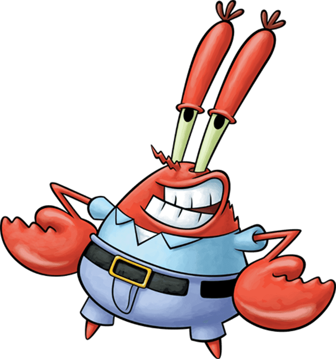

5)Юджин Гарольд "Мистер" Крабс

Описание:
Краб, являющийся основателем и менеджером ресторана «Красти Краб», где Губка Боб работает поваром, а Сквидвард — кассиром. Успех ресторана Крабса строится на низкой конкуренции и популярности фирменного бургера — крабсбургера, формула которого является строго охраняемой коммерческой тайной.
День Рождения: 30 ноября 1942 года.
Пол:Мужской
Рост:Неизвестен
Вес:Неизвестен
Интересные факты:
-Бывший моряк, Крабс постоянно использует в разговоре фразы, привычные для лексикона пиратов и мореплавателей. Любопытно, что даже дом героя построен в виде якоря.
-Больше рыболовных крючков и изделий, используемых людьми, Крабс боится разве что медицинского осмотра.
-В российской адаптации мультсериала мистера Крабса озвучивает актер Александр Хотченков.
-В "Большом розовом неудачнике" он рассказывает, что заставляет Губку Боба платить ему 100 долларов в час, чтобы он мог работать.
Назад